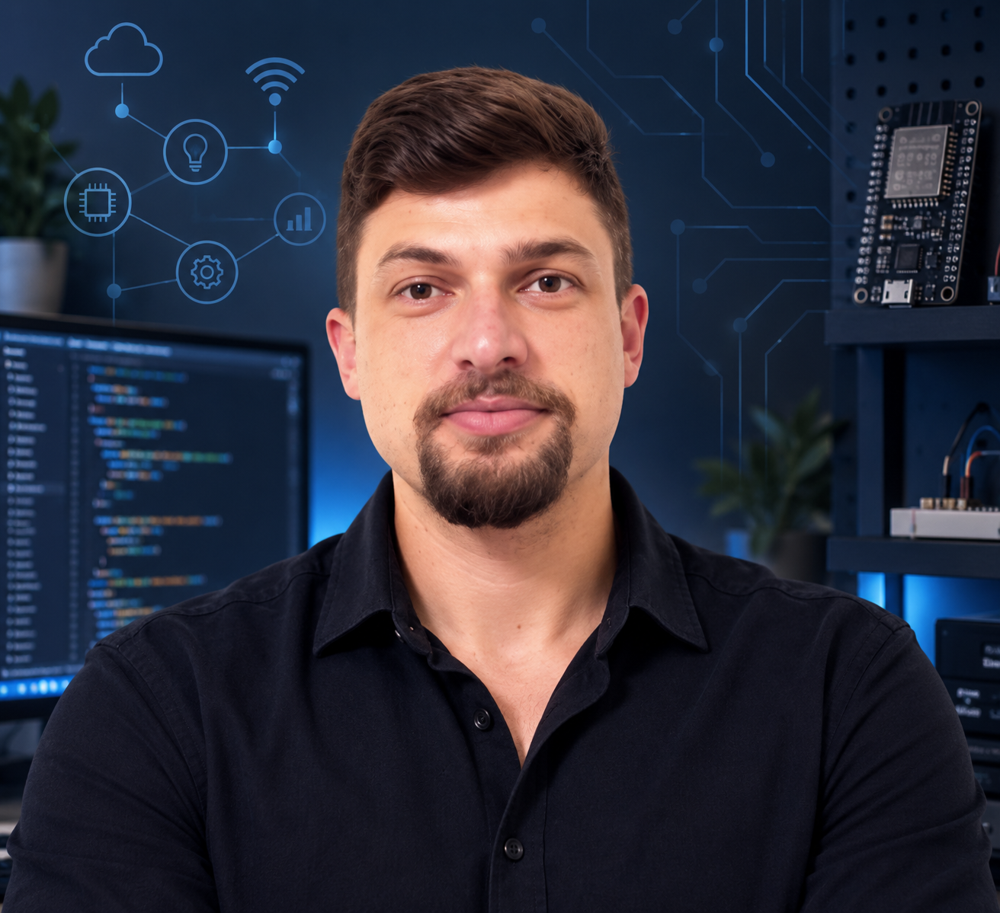
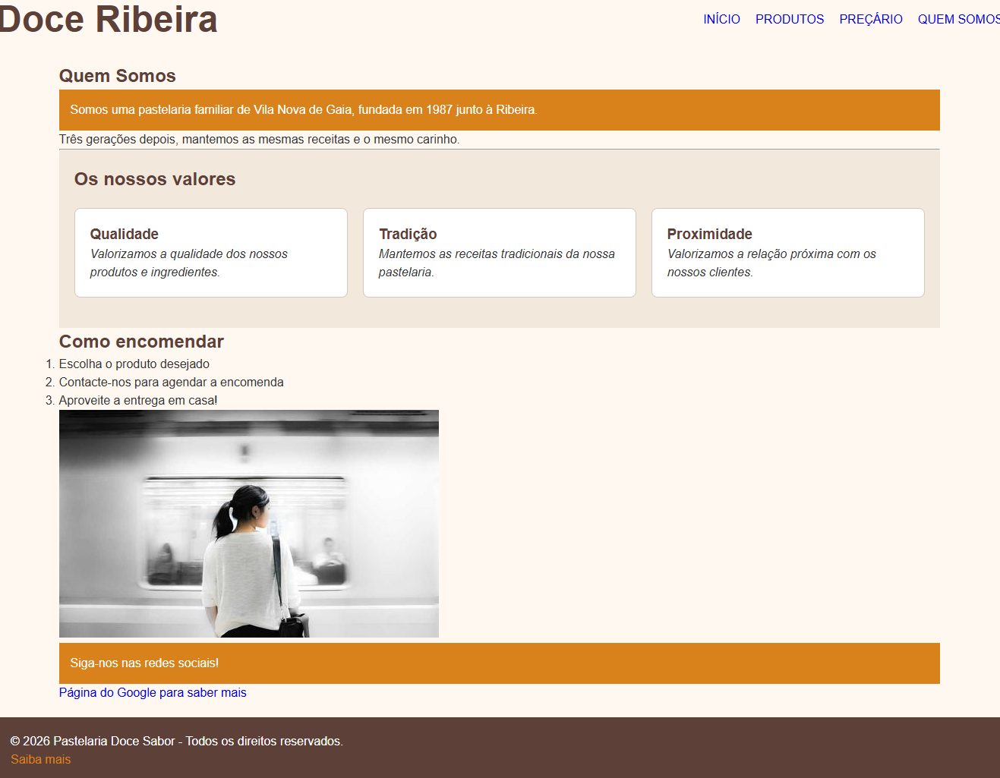
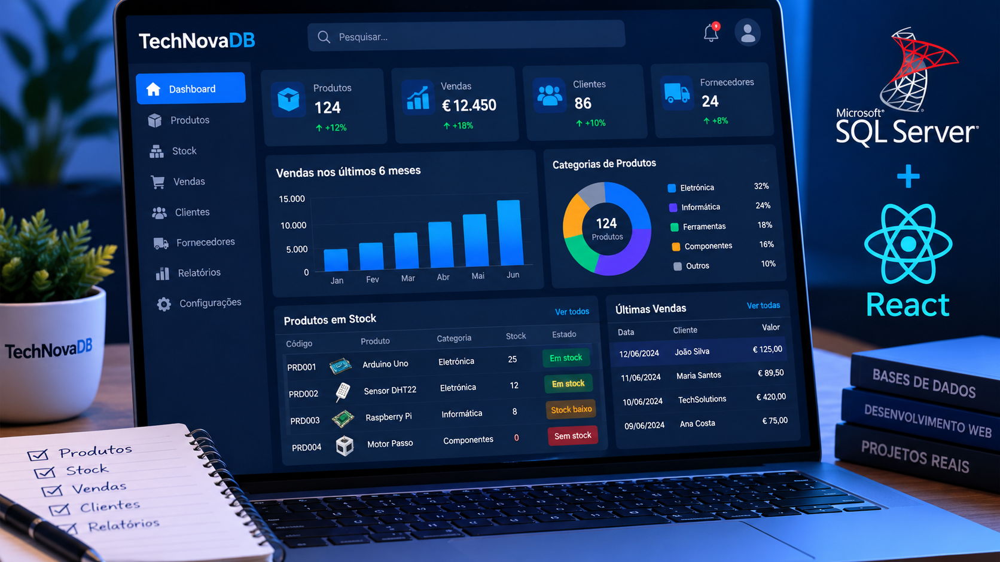
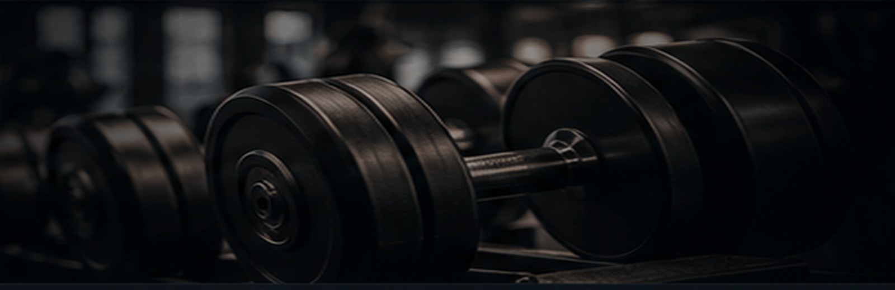

ELETROTÉCNICA & TECNOLOGIA
Roziel Lima Pimenta
Da eletrotécnica ao desenvolvimento de software.
Técnico em Eletrotécnica, com interesse em eletrónica, automação, IoT e desenvolvimento web. Em constante aprendizagem e evolução na área tecnológica.
⌘Base técnicaEletrotécnica · Automação
</>DesenvolvimentoHTML · CSS · JavaScript
◎Em aprendizagemSQL · React · IoT
IDEIAS QUE GANHARAM FORMA
Projetos
Projetos práticos que unem eletrotécnica, automação e desenvolvimento web.

Doce Ribeira
Site institucional para uma pastelaria, criado durante a formação de Web Design.
IoT e Programação
Experiências com dispositivos conectados, redes e programação para automação.
TechNovaDB
Projeto de base de dados e aplicação de gestão tecnológica, em desenvolvimento.
Meu Plano de Treino
Aplicação web para planear treinos e acompanhar a evolução.PERCURSO
Sobre
Sou Técnico em Eletrotécnica e tenho experiência em funções técnicas, operacionais e de atendimento. Estou a aprofundar competências em programação e desenvolvimento web, criando projetos que combinam a minha base técnica com tecnologia.
Gosto de resolver problemas práticos e aprender ferramentas que me permitam desenvolver soluções úteis.
Competências
Formação
Técnico em Eletrotécnica
Escola Electra · conclusão em 2016
Projeto final Mini CNC · 2.º lugarTécnico em Administração de Empresas
Colégio Estadual México · 2008
Formação atual
Web Design · IEFP · em curso
Inglês · aulas particulares · A2 em progressão para B1
PERCURSO PROFISSIONAL
Experiência
Técnico Reparador de Vidro Automóvel
ExpressGlass · Coimbra
Diagnóstico e reparação de vidros automóveis, instalação de para-brisas e controlo de qualidade.
Assistente de Loja
EDP Comercial
Gestão de contratos e faturação, atendimento ao cliente e utilização de sistemas digitais.
Assistente de Loja · Back Office
MEO
Atendimento, gestão contratual, validação documental e utilização de SAP e CRM.
Distribuidor
DPD · Lisboa
Planeamento de rotas, transporte seguro de mercadorias e cumprimento de prazos.
VAMOS CONVERSAR?
Contactos
Estou disponível para oportunidades, colaborações e novos projetos.